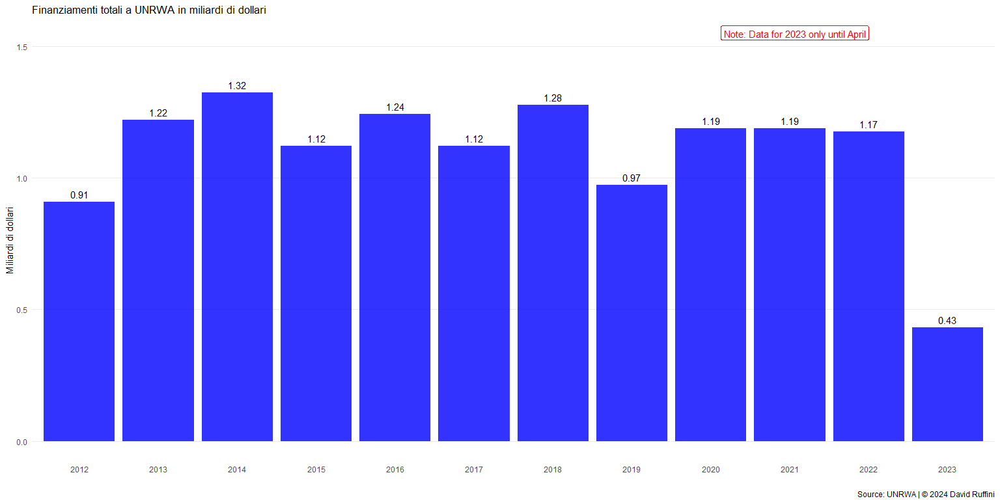
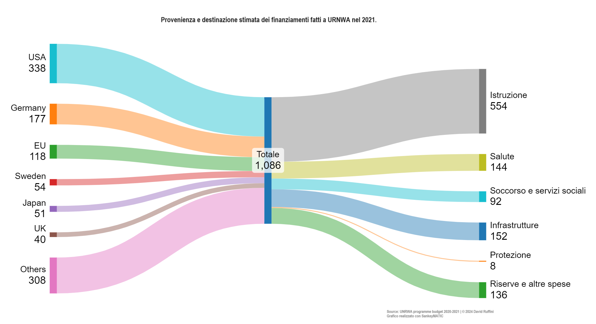
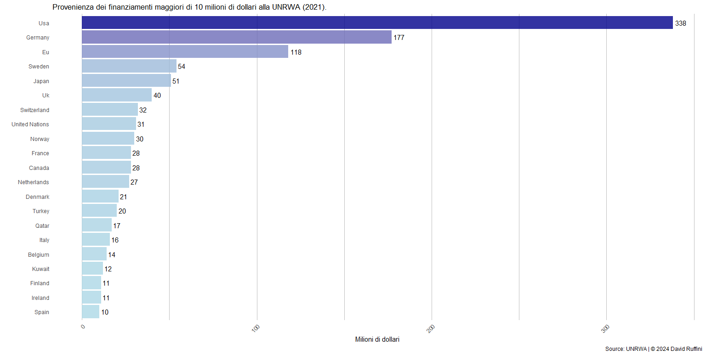
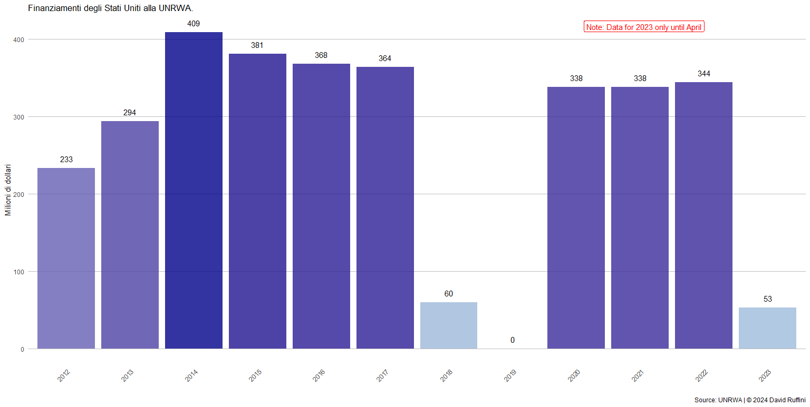

L'agenzia che meritano e quella di cui hanno bisogno
I finanziamenti alla UNRWA e i tentacoli di Hamas
L'Agenzia delle Nazioni Unite per il soccorso e l'occupazione dei profughi palestinesi (UNRWA) è la più grande agenzia umanitaria a Gaza e si occupa di fornire i mezzi di sopravvivenza e di istruzione ai palestinesi. Recentemente, è tornata a far discutere: 12 dei suoi 30000 dipendenti avrebbero preso parte all’attacco del 7 ottobre perpetrato da Hamas e altri lo avrebbero inneggiato. La notizia ha spinto alcuni stati donatori a sospendere gli aiuti e ha aperto una breccia nel dibattito pubblico: è possibile continuare a donare all’Agenzia sapendo che alcuni dei suoi dipendenti abbiano avuto un ruolo attivo nell’attacco contro Israele?
L’agenzia deve le sue origini alla guerra arabo-israeliano del 1948. Il 29 novembre 1947 l'Assemblea Generale delle Nazioni Unite approvò il piano per la partizione del territorio palestinese, dando vita a due Stati: uno arabo e uno ebraico; Gerusalemme, città considerata sacra da entrambe le religioni, sarebbe stata sotto il controllo internazionale. L’idea non venne accettata dalle popolazioni arabe e diede vita a una guerra civile.
Il 15 maggio 1948 il Mandato britannico della Palestina sarebbe giunto al termine e il giorno precedente, David Ben Gurion, a capo dell’Organizzazione sionista mondiale e presidente dell’Agenzia ebraica per Israele, dichiarò unilateralmente la nascita dello Stato ebraico e la sua indipendenza. Tale dichiarazione avrebbe assunto validità a mezzanotte di quello stesso giorno, nell’esatto istante in cui l’Impero britannico avrebbe perso ogni influenza su quei territori. Il clima che seguì la dichiarazione di indipendenza, già esacerbato dalla guerra civile, non fece che peggiorare e culminò nell’invasione da parte degli Stati arabi confinanti con la Palestina dei territori ex-mandatari e ora israeliani.
La guerra arabo-israeliana fu vinta dallo stato israeliano, il quale, con armistizi separati, riuscì a guadagnare più del 20% rispetto alle terre precedentemente assegnate dalla risoluzione delle Nazioni Unite. La vittoria di Israele diede il via all’esodo palestinese, chiamato anche “al-Nakba”, dove circa metà della popolazione araba palestinese fuggì o fu costretta a sgomberare.
In seguito al conflitto, al fine di aiutare circa 700000 palestinesi che dovettero abbandonare le loro case, nel 1949 nasce l'Agenzia delle Nazioni Unite per il soccorso e l'occupazione dei profughi palestinesi (UNRWA). È una costola dell'Organizzazione delle Nazioni Unite (ONU), ma rimane separata dall'Alto commissariato delle Nazioni Unite per i rifugiati (UNHCR), il cui ruolo è sostenere tutti gli altri rifugiati del mondo. Gli obiettivi iniziali erano sostenere i profughi palestinesi nella ricerca di un lavoro, ma attualmente il suo ruolo è diventato più di sussistenza, infatti è suo il compito di fornire cibo, acqua, educazione e garantire un livello minimo di sanità.
L'organizzazione di soccorso palestinese ha dichiarato che attualmente sono 6 milioni i rifugiati che possono beneficiare dei suoi servizi. Nei rifugiati palestinesi rientrano due categorie: chi aveva come residenza la Palestina nel periodo dal primo di giugno 1946 al 15 di maggio del 1948 e chi ha perso sia la casa che i mezzi di sussistenza come conseguenza del conflitto del 1948. Coloro che possono richiedere aiuti e che vengono conteggiati nei rifugiati sono anche i discendenti delle persone che rientrano nelle due categorie viste sopra.
Per realizzare i suoi obiettivi, l’Agenzia basa i suoi finanziamenti su donazioni di carattere volontario che vengono principalmente da paesi o da altre organizzazioni. Dall’immagine seguente si vede che il finanziamento medio si aggira intorno a poco più di un miliardo di dollari.

Finanziamenti annuali in miliardi di dollari provenienti da altri stati o da altre organizzazioni.
La maggior parte del denaro ricevuto viene investito nell’istruzione dei palestinesi. La grande quota destinata a questo fine ha fatto sollevare critiche, poiché viste le infiltrazioni di Hamas, si ha paura di un possibile indottrinamento dei ragazzi.

Stati donatori e destinazione attesa dei finanziamenti a UNRWA nel 2021 in milioni di dollari.
Scendendo nel dettaglio dei paesi finanziatori ci si può concentrare su coloro che hanno donato più di 10 milioni di dollari nel 2021: Stati Uniti, Germania e Unione Europea sono tra i contributori più generosi in termini assoluti. I primi due Paesi contribuiscono a circa la metà del totale dei finanziamenti ricevuti annualmente.

Paesi donatori e relativa donazione a UNRWA in milioni di dollari nel 2021.
Le donazioni statunitensi non sono sempre state le più generose.
Nel biennio 2018-2019 gli Stati Uniti hanno diminuito gli aiuti: nel 2018 Trump aveva diminuito il finanziamento da 360 milioni di dollari a 60 milioni di dollari, mentre il secondo anno sono stati donati 0 dollari.

Finanziamenti a UNRWA dagli Stati Uniti.
Non è la prima volta che l’Agenzia si trova sotto inchiesta: Al Jazeera nel 2019 aveva riportato dei casi di abusi di autorità al suo interno, secondo i quali, a causa della crisi dei finanziamenti vista precedentemente, il potere era stato accentrato nelle mani di pochi singoli individui che operavano non rispettando gli altri lavoratori. Tale informazione ha fatto sì che diversi paesi, come Svizzera e Olanda, fermassero i finanziamenti.
Il Wall Street Journal ha evidenziato che il 23% degli uomini adulti dell’agenzia ha un legame con Hamas, mentre nella popolazione gazawi tali connessioni sono riscontrate solamente nel 15% degli uomini adulti, indicando come l’organizzazione sembra quindi veicolare una maggiore possibilità di creare rapporti con Hamas. In termini più generali, quindi non concentrandosi sugli uomini adulti, l’articolo riporta che su 12000 dipendenti, il 10% sembrerebbe avere relazioni con il gruppo terrorista, mentre circa il 49% dello staff avrebbe parenti stretti con legami ufficiali ad Hamas e altri gruppi terroristici.
La decisione di sospendere gli aiuti peggiorerebbe uno scenario che già ora è devastante. Il numero di individui coinvolti, 12, sul totale dei dipendenti, 30000, è un numero davvero piccolo e penalizzare l’intera organizzazione, che ha già licenziato le persone indagate, non farà altro che aggravare la situazione dei palestinesi. In un tweet del 28 di gennaio 2024 di Medici Senza Frontiere si fa notare che già ora "Nella Striscia di Gaza nessun ospedale è più in grado di fornire cure mediche salvavita nel caso di un grande afflusso di feriti".
Inoltre, è importante ricordare che la gestione pubblica della Striscia è in mano ad Hamas e al fine di operare al suo interno è chiaro che possano nascere contatti tra le due organizzazioni; se è senza dubbio giusto punire la partecipazione agli attacchi del 7 ottobre e i comportamenti che lo celebrano, come una chat di Telegram rivela, non supportare più l’organizzazione umanitaria potrebbe non essere una così facile decisione.
È sicuramente necessario indagare su ulteriori ruoli dell’agenzia nella politica terrorista di Hamas e riformare l’intera organizzazione, ma allo stesso tempo è fondamentale continuare a fornire aiuti umanitari ai civili palestinesi.
Ciao!
Mi chiamo David, sono uno studente di Statistica e in questo sito raccoglierò le mie analisi su argomenti che trovo di mio interesse.
I motivi principali che mi hanno spinto a pubblicare le mie ricerche sono il voler dare ordine a ciò che prima vagava solamente tra le cartelle del desktop e condividere con gli altri i risultati delle suddette indagini.
Se siete in disaccordo, riconoscete un mio errore o per qualsiasi altro motivo volete scrivermi, potete contattarmi nei canali che ho messo in fondo alla pagina.